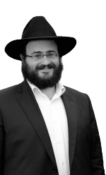

T’mimim – Wholesome in Torah and Hiskashrus
Yeshivas Tomchei T’mimim Lubavitch – Queens, is a mesivta which after two years of being opened, went from a minyan of bachurim to sixty talmidim. * Rabbi Menachem Mendel Scharf, the Menahel Ruchni of the yeshiva, addresses the educational issues and challenges of our generation as well as gives the inside story of the founding of the Yeshiva.
AMERICA IS NO DIFFERENT!

***
It is early in the morning in New York. A few dozen bachurim are learning a maamer Chassidus in chavrusa pairs in the large, beautiful zal. After an inspirational Shacharis and a satisfying breakfast, the bachurim sit facing one another once again, to learn the sugya of “Shomer Sh’Mosar L’Shomer.” A particularly loud pair caught my attention as they discussed, argued and looked things up in the Rishonim and Acharonim … I thought, “Is there anything that better depicts the Rebbe Rayatz’s statement of ‘America is no different,’ than this?” …Welcome to Yeshivas Tomchei T’mimim – Queens
Amongst rows of private homes, in the heart of residential Forest Hills, there is a fortress of Torah, a Chassidic lighthouse of Torah and Yiddishkait that illuminates the entire area. Since its founding three years ago, the yeshiva has become a spiritual hub for the residents of the area. The conduct of the bachurim as “neiros l’ha’ir” is noticed by the local residents, which includes over 10,000 Jewish families. Every Shabbos afternoon, the bachurim split into groups and walk to twenty-five shuls in the area and lecture on a maamer Chassidus.
Within a short time, the yeshiva has joined the ranks of other prominent Chabad yeshivos worldwide. Just two weeks ago, there was a festive celebration marking the conclusion of a huge Mivtza Limud (study campaign), which included Bekius (proficiency) tests on Nigleh and Chassidus they had learned over the past year (see box for full report).
IF THE REBBE WERE STANDING HERE NOW
In personal conversations with talmidim and staff members, I learned how they deal with daily challenges, why the Yeshiva was founded, as well as their unique approach to chinuch that has proven to be exceptionally successful in raising the next generation of Chayolei Bais Dovid.
Why was the yeshiva started?
In an interview with the Menahel Ruchni, Rabbi Menachem Mendel Scharf, he explained, “The yeshiva was founded with three goals in mind. One, to provide a chinuch permeated with hiskashrus to the Rebbe Melech HaMoshiach in all aspects of the day. Two, to build a personal and loving relationship with every talmid. Three, to create an environment that promotes a very high academic level, both in Nigleh and Chassidus.
“A chinuch based on hiskashrus to the Rebbe is what makes a bachur motivated to come on time to learn. It is not out of fear of a consequence or a fine from the mashgiach that he comes on time to seder, but rather he knows that these set times are an expression of the Rebbe’s ‘Hagbala Atzmis’ (the Rebbe’s essence that has been placed into these limited times) and ‘I come on time because that is what the Rebbe wants.’
“So too, when the Hanhala sees inappropriate behavior, they don’t only say ‘This is not the proper way to act.’ The bachur is trained to think, ‘If the Rebbe were standing here right now, would I do that?’ The answer is obvious and the lesson the bachur learns is that the Rebbe is everything in his life. We also encourage the bachurim to write a monthly report to the Rebbe so that they feel his presence in their daily lives.
“As for the second point, regarding giving personal attention to each talmid, we don’t just say it, we practice it. The results are in the feelings the bachurim have, particularly towards the yeshiva. If a talmid feels close to the school he learns in, it’s only because of the staff’s deep sense of commitment to the talmidim. We can see that wherever there is a good relationship between a talmid and a member of the Hanhala, it makes the talmid feel happy to be in yeshiva.
“It is the same with the third point concerning the high level of learning. Getting deeply involved in learning and mastering the material is what gives talmidim the confidence to succeed in Yeshiva. Before giving a challenge to a bachur, one must first assess his abilities and only then can one set the expectations. We set our standards a little higher than the norm, but always to that which the bachur is capable of achieving. It has to be done in a way that he will work on it without feeling that it’s a hopeless task, making him feel like a failure.”
SET HIGH STANDARDS AND HOLD THEM TO IT
The yeshiva’s excellent reputation has enabled it to grow from about a minyan of bachurim to sixty talmidim. The yeshiva has many fine qualities, but its success must be attributed to the personal relationship that the Hanhala has with each talmid.
In brief conversations with the bachurim, I learned that the mashpia is not just a teacher or guide but rather a role model whom the bachurim look up to and admire. “The young staff members can easily relate to the problems facing the bachurim,” says Rabbi Scharf, “due in part to their age and common language. In many cases, the staff must have an immediate answer to a rising issue, for any delay can be damaging. The staffs are, Boruch Hashem, able to better communicate with the talmidim as well as to be a positive influence on them before any problems can even arise.”
The educational approach the Hanhala follows is a balanced combination of “sur mei’ra” (turn from evil) and “assai tov” (do good). From the “sur mei’ra” aspect, the bachurim are living in a dormitory which is closely supervised from the Hanhala, protecting them from the distractions of the outside world. The talmidim display maturity and understanding regarding the rules because they know there are consequences to their actions.
“When there is a rule, along with consistent supervision, and equal standards to all students, then in the event that a student breaks the rule, he will not respond angrily for he knows what is expected of him.”
From the “assai tov” aspect, much effort is put into creating a Chassidishe atmosphere. Besides Chassidishe farbrengens with mashpiim, teachers, and shluchim, guest mashpiim are invited to farbreng with the bachurim, and there are learning contests which also encourage positive action. The staff also has frequent one-on-one, personal conversations with the bachurim. During these conversations, the staff speaks about the feeling of “v’niflinu,” as Chassidim of the Rebbe, arousing in them a deeper geshmak for learning Chassidus and to follow the “darchei HaChassidus.
“It’s not so simple. On the one hand, we need to instill these rules and values in a personal way; on the other hand, we need to supervise and firmly maintain our high standards.”
DEDICATION – SECRET OF SUCCESS
Chinuch of children and young boys is always considered a demanding field. As time goes by, it becomes harder and more complicated.
“If years ago,” explains Rabbi Scharf, “a proper chinuch required much effort and investment from the mechanech, how much more is it so regarding the work today, given the challenges we face in our generation. There is no manual or quick fix magical solution. Each case must be looked at individually and dealt with accordingly.
“Dedication is our secret to success. Our staff is comprised entirely of Chassidishe yungerlite who are given over to the talmidim. They sit with them after their scheduled hours, give shiurim during recess to those bachurim who are interested, and sometimes come at night to speak to bachurim individually. The staff hears what’s on the bachurim’s minds, helps them deal with their difficulties, and gives them the tools to flourish spiritually.
“I would feel confident in saying that nearly every bachur has one staff member with whom he feels comfortable speaking about private personal matters, knowing the staff member will provide him with all the help he needs. With this kind of personal attention and availability, the talmidim feel closer to the staff, enabling them to resolve most problems that arise.
“The difficulties bachurim of this age face in connection to Yiddishkait, are the kind of problems that sometimes might lead to the boy dropping out of the yeshiva, G-d forbid. Most problems are a result of emotional challenges that might stem from a crisis at home or social problems. It is very important to identify the source of the problem.
“A few months ago, we saw that one of our outstanding bachurim seemed to be bothered by something. He suddenly stopped listening during shiur, did not participate in farbrengens, and exhibited a number of other troubling signs in his behavior.
“I called him over, and after sitting together for a while, he shared with me his inner struggle, relating to a family matter. After speaking about it, he felt as if a large burden had been lifted from him. Of course we gave him the support he needed to deal with the situation, and Baruch Hashem he got right back on track.
“The staff’s dedication towards the talmidim also affects the devotion the talmidim have to each other. They are instilled with Ahavas Yisroel. This Ahavas Yisroel is definitely one of the keys to the success of the yeshiva.”
CHAYUS OF “YEMOS HAMOSHIACH”
In conversation with the talmidim and members of the staff, it is apparent that there is a special chayus for Yemos HaMoshiach in the yeshiva. This derives mainly from the fact that serious attention is given to learning Inyanei Moshiach and Geula. As the Rebbe says, this is the “direct, easy, and quick path towards actually bringing Moshiach Tzidkeinu.”
The goal of a Chabad Yeshiva is to raise T’mimim who, even after their yeshiva years, will look back at the glorious days spent in Tomchei T’mimim as a time that instilled within them a true love for the Rebbe MH”M and his directives. This is truly the image of a “Tamim.” His very being exemplifies Chassidishe refinement combined with pride in his mission, not becoming affected by what goes on in the outside world. In Tomchei T’mimim Lubavitch – Queens, one can see the preservation of the original character of a Tamim, just like it was in Tomchei T’mimim yeshivos throughout Russia.
I asked R’ Scharf about the atmosphere in the yeshiva. He said: “As I mentioned earlier, it’s about hiskashrus to the Rebbe and the desire to give the Rebbe nachas. The concept of ‘Rebbe’ is not just another subject we talk about on special dates like 5 Teves, 10 Shvat, or 11 Nissan. In our yeshiva, ‘Rebbe’ is not just another topic for farbrengens. The Rebbe is what we live with every day, all day, day and night, because the Rebbe is what our life is all about.
“To help bring home this point, I will tell you something that just happened. At a meeting of the Hanhala, it was suggested that we end the year a few days later than we had originally planned. We assumed the talmidim would have a hard time with this and decided to ask the Rebbe. The answer we opened up to in the Igros Kodesh said: You deal with chinuch and chinuch is a matter of k’dusha and k’dusha is Hashem. Hashem is without finite limits and His service is without finite limits. So what you thought was the maximum, go beyond that, because you were given unlimited kochos.
“After an answer like that from the Rebbe, we decided to officially announce the extension of the school year. After I made this announcement, I noticed, the talmidim were very disappointed. I decided to read the letter that I had opened to from the Rebbe. Suddenly, all the earlier opposition disappeared. They all calmed down and accepted the new date for the last day of the school year.
“What changed was that the bachurim realized that this is what the Rebbe wants. We didn’t need more than that. The chinuch seems to be working …” concluded R’ Scharf with satisfaction.
THE BOYS’ IMPRESSIVE ACHIEVEMENTS
Three weeks ago, there was an event marking the conclusion of Mivtza Torah in both Nigleh and Chassidus. Hundreds of chapters of Tanya and thousands of pages of Gemara were learned by heart. The celebration took place in yeshiva with members of the Vaad Ruchni, mashpiim R’ Chaim Serebryanski and R’ Sholom Dovber Lipsker, the Hanhala and staff, and the students and their parents.
During the evening, prizes and certificates were given out to dozens of outstanding bachurim who learned a tremendous amount. Ten bachurim stood out for completing Meseches Bava Metzia and doing exceptionally well on a comprehensive written test.
In addition, there was an oral test for those who learned by heart the “shakla v‘tarya” of the entire masechta at once, with Rabbi Aharon Yaakov Schwei, the Mara d’asra and member of the Beis Din Tzedek of Crown Heights. R’ Schwei was very impressed by their knowledge of the material, 119 dafim of the Gemara which was learned this year in Chabad yeshivos around the world.
THE FOUNDATION OF A CHASSIDISHE CHINUCH – ON ONE FOOT
One of the accomplishments the Hanhala of Yeshivas Tomchei T’mimim Lubavitch in Queens prides itself in is being able to provide a form of chinuch that will remain with the talmid throughout his life. This is the meaning of the verse, “Educate a child according to his way, even when he will grow old he will not veer from it.”
“When you build a building with many stories,” R’ Scharf explains, “you need a foundation that will sustain not just the lower floors but all the floors, from the bottom to the top. It is the same with Chinuch. One must provide a healthy foundation for life, with principles that will support and stand strong throughout life’s transitions.
“What is that foundation of a Chassidishe chinuch? Hiskashrus to the Rebbe. This is the foundation upon which the entire life of a talmid is built, both in his academics and in his Chassidishe behavior.
“A bachur to whom the Rebbe is not merely a tzaddik who lived long ago, but rather a current reality to whom he should provide nachas, will control himself, listening to his parents and teachers with Kabbalas Ol, even when he disagrees.
“A shliach who was trained in his childhood that every act he does matters to the Rebbe who is here, in this physical world, will properly navigate situations in which he seems forced to choose between a wealthy man with a big donation or keeping to all the requirements of Shulchan Aruch in his community.
“A Chassidishe balabus who was trained from childhood to give a din v’cheshbon to the Rebbe every month will be ashamed to write that the last time he set times to learn and davened properly, went on mivtzaim or attended a farbrengen, was a long time ago. He will make sure that does not happen.
“Obviously, the foundation of chinuch in learning and Chassidishe behavior is to instill a love and personal feeling of hiskashrus to the Rebbe. This, on one foot, is the foundation for a Chabad Chassidishe chinuch.”
Y. Lapidot. "T’mimim – Wholesome in Torah and Hiskashrus." Beis Moshiach, no. 888 (July 18, 2013).